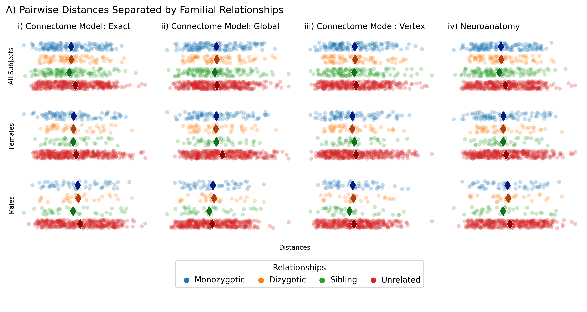
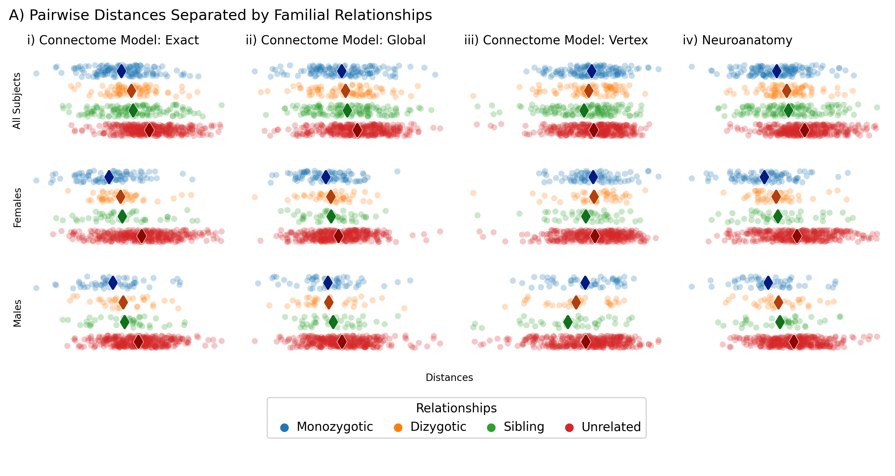
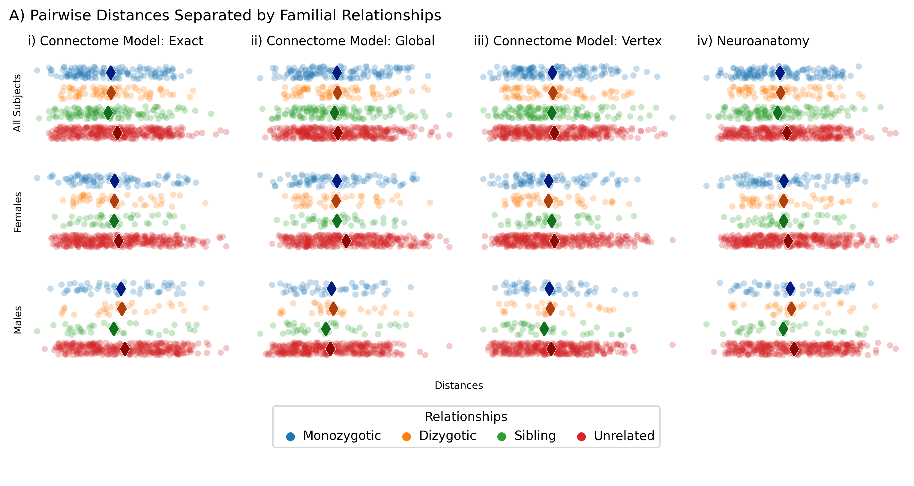
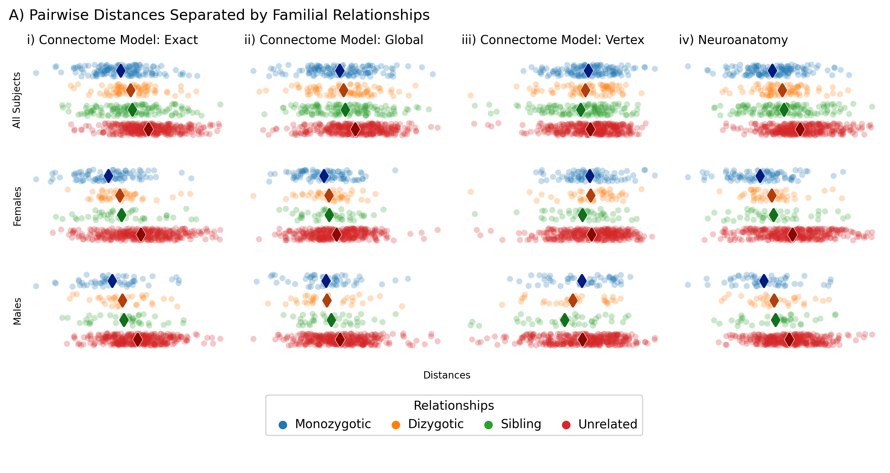

for parcellation in parcellations:
distances = []
models = ["exact", "glob", "vertex"]
parc_path = data_path / parcellation
connectome_distances = np.load(parc_path / "connectome_distances.npz")
neuro_distance = np.load(parc_path / "covariate_distance.npz")["neuroanatomy"]
for model in models:
cdist = squareform(connectome_distances[model])
gdist = squareform(genomes)
ndist = squareform(neuro_distance)
for gender in genders:
if gender == "M":
X = squareform(cdist[male_idx, :][:, male_idx])
Y = squareform(gdist[male_idx, :][:, male_idx])
Z = squareform(ndist[male_idx, :][:, male_idx])
elif gender == "F":
X = squareform(cdist[female_idx, :][:, female_idx])
Y = squareform(gdist[female_idx, :][:, female_idx])
Z = squareform(ndist[female_idx, :][:, female_idx])
else:
X = squareform(cdist)
Y = squareform(gdist)
Z = squareform(ndist)
for i, rel in [(0, "MZ"), (1, "DZ"), (2, "NonTwin"), (4, "Unrelated")]:
if i == 4:
t = X[np.where(Y == 4)[0]]
jdx = np.where(t > t.mean() - t.std())[0]
idx = np.random.choice(jdx, 350, replace=False)
else:
idx = Y == i
for j, q in zip(X[idx], Z[idx]):
distances.append([j, q, rel, model, gender])
plot_df = pd.DataFrame(
distances, columns=["distance", "covariate", "relationship", "scale", "gender"]
)
plot_df.gender.replace(
to_replace=dict(All="all", F="female", M="male"), inplace=True
)
gender = ["all", "female", "male"]
scale = ["exact", "global", "vertex"]
layout = [
["exact-all", "global-all", "vertex-all", "covariate-all"],
["exact-female", "global-female", "vertex-female", "covariate-female"],
["exact-male", "global-male", "vertex-male", "covariate-male"],
["legend", "legend", "legend", "legend"],
]
col_names = [
"i) Connectome Model: Exact",
"ii) Connectome Model: Global",
"iii) Connectome Model: Vertex",
]
fig, axes = plt.subplot_mosaic(
layout,
figsize=(10, 5),
width_ratios=[1, 1, 1, 1],
height_ratios=[1, 1, 1, 1],
dpi=300,
constrained_layout=True,
)
ax_arr = np.array([val for key, val in axes.items() if key != "legend"]).reshape(
3, -1
)
handles, labels = stripplot(plot_df, ax_arr[:3, :3], col_names=col_names)
stripplot_cov(plot_df, ax_arr[:3, -1])
# handle limits
limits = [[a.get_xlim() for a in b] for b in ax_arr]
ax = axes["legend"]
sns.despine(bottom=True, left=True, top=True, right=True, ax=ax)
ax.legend(
handles[:4],
["Monozygotic", "Dizygotic", "Sibling", "Unrelated"],
loc=10,
title="Relationships",
ncol=4,
handletextpad=0,
columnspacing=1,
frameon=True,
)
ax.axis("off")
fig.suptitle(
"A) Pairwise Distances Separated by Familial Relationships",
x=0.0,
y=1.05,
horizontalalignment="left",
fontsize=12,
)
fig.supxlabel("Distances", y=0.2, fontsize=8)
fig.savefig(f"./figures/distances/{parcellation}.svg", bbox_inches="tight")
 


